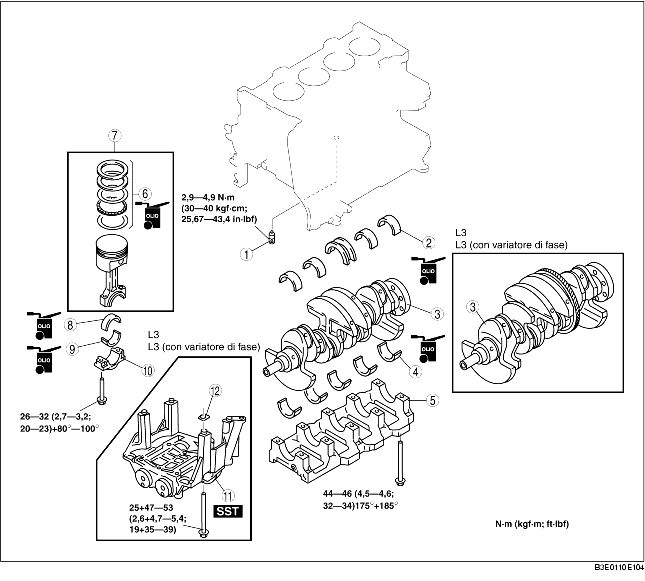

1. Montare nell'ordine indicato in tabella.

.
|
1
|
Valvola getto olio
|
|
2
|
Cuscinetto di banco superiore, cuscinetto reggispinta
|
|
3
|
Albero motore
|
|
4
|
Cuscinetto di banco inferiore, cuscinetto reggispinta
|
|
5
|
Cappello di banco
(Vedere Dettaglio montaggio cappello di banco.)
|
|
6
|
Segmento
(Vedere Dettaglio montaggio segmento.)
|
|
7
|
Gruppo biella, pistone
(Vedere Dettaglio montaggio pistone.)
|
|
8
|
Cuscinetto di biella superiore
(Vedere Dettaglio montaggio cuscinetto di biella.)
|
|
9
|
Cuscinetto di biella inferiore
(Vedere Dettaglio montaggio cuscinetto di biella.)
|
|
10
|
Cappello di biella
(Vedere Dettaglio montaggio cappello di biella.)
|
|
11
|
Albero controrotante (L3 (con variatore di fase))
|
|
12
|
Spessore di regolazione
|
1. Installare i cappelli di banco nell'ordine indicato in figura.
1. Installare le due sezioni del raschiaolio ed il distanziale.
2. Verificare che il secondo segmento venga installato con la superficie raschiante in basso.
3. Verificare che il segmento superiore venga installato con la superficie raschiante in alto.
1. Posizionare l'apertura di ciascun segmento come indicato in figura.
2. Inserire pistone e biella nel cilindro con la freccia orientata verso il frontale del motore.
1. Installare il cuscinetto sulla biella e sul cappello come mostrato in figura.
1. Serrare i bulloni della biella in due fasi usando lo SST (49 D032 316).
1. Controllare visivamente che l'ingranaggio dell'albero controrotante non sia danneggiato e che l'albero ruoti liberamente.
2. Installare lo SST come mostrato in figura.
3. Ruotare l'albero motore in senso orario fino a portare il cilindro N. 1 in posizione di PMS (finché il contrappeso non è attaccato allo SST).
4. Installare lo spessore di regolazione sulla sede dell'albero controrotante.
5. Tenendo i riferimenti esattamente allineati al punto morto superiore, montare l'albero controrotante sul blocco cilindri.
6. Sistemare lo SST come mostrato in figura, quindi misurare il gioco dell'ingranaggio usando un comparatore.
Tabella di selezione spessore di regolazione